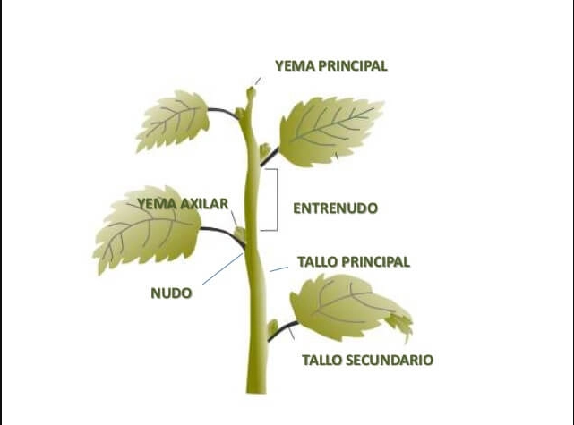

El tallo
El tallo transporta agua y nutrientes de las raíces a las hojas y el alimento producido por éstas al resto de la planta. El tallo también sirve para mantener la estabilidad de la planta y le da la capacidad de alcanzar la altura necesaria para ser expuesta a la luz del sol. El tallo puede ser corto o largo. Según los tallos, las plantas pueden ser herbáceas o leñosas. La mayoría de las plantas herbáceas tienen generalmente tallos que son suaves, verdes, y contienen poco tejido leñoso. Estas plantas generalmente mueren cada año. Muchas flores y perennes pertenecen a esta categoría, junto con las verduras o vegetales y plantas de casa. Podríamos considerar a este tallo como la” columna ” de la planta y casi nunca alcanza los dos metros de altura.
Partes del Tallo
En este esquema observaras las diferentes partes del tallo:
- Yema principal
- Entrenudo
- Yema axilar
- Nudo
- Tallo principal
- Tallo secundario

-
Clases de tallos
Las plantas leñosas tienen unos tallos que generalmente no mueren y se mantienen durante el invierno. Muchos de estos tallos se utilizan para hacer muebles.
Dentro del grupo de los tallos leñosos tenemos a los árboles y a los arbustos. Los árboles tienen un tronco grueso y leñoso con ramas que crecen lejos del suelo. Los arbustos tienen un tallo leñoso, y se caracteriza por tener ramas que crecen cerca del suelo. Dentro de los tallos encontramos los vasos liberianos y los vasos leñosos que son los conductos que permiten la circulación de la savia.